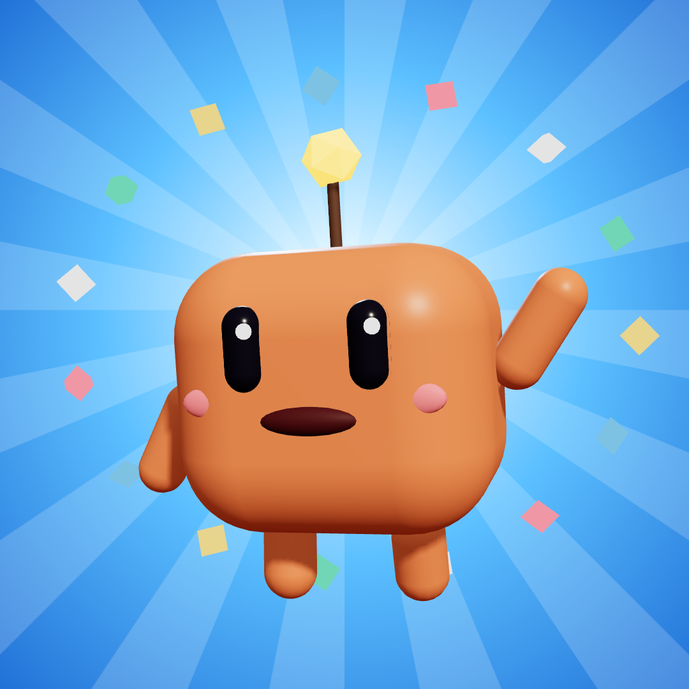

VIOLÊNCIA EM
JABOATÃO
o que dizem os números
0
assassinatos em um ano
▲ SUBINDO
ou
CAINDO ▼
Fique informado
Siga para mais
vídeos com o Faísca
Fontes: Secretaria de Defesa Social de Pernambuco (boletim de 24/01/2026) e Blog do Magno, citando dados da SDS-PE.

@faisca.curioso
+ SEGUIR
@faisca.curioso